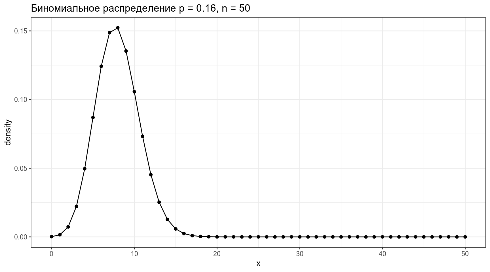

3. Байесовский вывод
Г. Мороз
1. Байесовский вывод
1.1 Нотация
В байесовском подоходе статистический вывод описывается формулой Байеса
\[P(θ|Data) = \frac{P(Data|θ)\times P(θ)}{P(Data)}\]
- \(P(θ|Data)\) — апостериорная вероятность (posterior)
- \(P(Data|θ)\) — функция правдоподобия (likelihood)
- \(P(θ)\) — априорная вероятность (prior)
- \(P(Data)\) — нормализующий делитель
В литературе можно еще встретить такую запись:
\[P(θ|Data) \propto P(Data|θ)\times P(θ)\]
2. Категориальные данные
В датасете c грибами (взят c kaggle) представлено следующее распределение по месту обитания:
df <- read_csv("https://github.com/agricolamz/2019_BayesDan_winter/blob/master/datasets/mushrooms.csv?raw=true")
df %>%
count(class, habitat) %>%
group_by(class) %>%
mutate(prop = n/sum(n)) %>%
ggplot(aes(class, prop, fill = habitat, label = round(prop, 3)))+
geom_col()+
geom_text(position = position_stack(vjust = 0.5), color = "white")Мы нашли некоторый новый вид грибов на лужайке (grasses). Какой это может быть гриб: съедобный или ядовитый? У нас нет никаких идей, почему бы нам отдать предпочтения той или иной гипотезе, так что будем использовать неинформативное априорное распределение:
data_frame(model = c("edible", "poisonous"),
prior = 0.5,
likelihood = c(0.335, 0.189),
product = prior*likelihood,
posterior = product/sum(product))Вот мы и сделали байесовский апдейт. Теперь апостериорное распределение, которые мы получили на предыдущем шаге, мы можем использовать в новом апдейте. Допустим, мы опять нашли этот же вид гриба, но в этот раз в лесу (woods).
data_frame(model = c("edible", "poisonous"),
prior_2 = c(0.639, 0.361),
likelihood_2 = c(0.447, 0.324),
product_2 = prior_2*likelihood_2,
posterior_2 = product_2/sum(product_2))2.1
Вашего друга похитили а на почту отправили датасет, в котором записаны данные о погоде из пяти городов. Ваш телефон зазвонил, и друг сказал, что не знает куда его похитили, но за окном легкий дождь (Rain). А на следующий день — сильный дождь (Rain, Thunderstorm). Сделайте байесовский апдейт и предположите, в какой город вероятнее всего похитили друга (форма принимает латиницу).
3. Биномиальные данные
Биномиальные данные возникают, когда нас интересует доля успехов в какой-то серии эксперементов Бернулли.
3.1 Биномиальное распределение
Биномиальное распределение — распределение количества успехов эксперементов Бернулли из n попыток с вероятностью успеха p.
\[P(k | n, p) = \frac{n!}{k!(n-k)!} \times p^k \times (1-p)^{n-k} = {n \choose k} \times p^k \times (1-p)^{n-k}\] \[ 0 \leq p \leq 1; n, k > 0\]
data_frame(x = 0:50,
density = dbinom(x = x, size = 50, prob = 0.16)) %>%
ggplot(aes(x, density))+
geom_point()+
geom_line()+
labs(title = "Биномиальное распределение p = 0.16, n = 50")
3.2 Бета распределение
\[P(x; α, β) = \frac{x^{α-1}\times (1-x)^{β-1}}{B(α, β)}; 0 \leq x \leq 1; α, β > 0\]
Бета функция:
\[Β(α, β) = \frac{Γ(α)\times Γ(β)}{Γ(α+β)} = \frac{(α-1)!(β-1)!}{(α+β-1)!} \]
data_frame(x = seq(0, 1, length.out = 100),
density = dbeta(x = x, shape1 = 8, shape2 = 42)) %>%
ggplot(aes(x, density))+
geom_point()+
geom_line()+
labs(title = "Бета распределение α = 8, β = 42")
Можно поиграть с разными параметрами:
\[\mu = \frac{\alpha}{\alpha+\beta}\]
\[\sigma^2 = \frac{\alpha\times\beta}{(\alpha+\beta)^2\times(\alpha+\beta+1)}\]
3.3 Байесовский апдейт биномиальных данных
\[Beta_{post}(\alpha_{post}, \beta_{post}) = Beta(\alpha_{prior}+\alpha_{data}, \beta_{prior}+\beta_{data}),\] где \(Beta\) — это бета распределение
3.3 Байесовский апдейт биномиальных данных: несколько моделей
data_frame(x = rep(seq(0, 1, length.out = 100), 6),
density = c(dbeta(unique(x), shape1 = 8, shape2 = 42),
dbeta(unique(x), shape1 = 16, shape2 = 34),
dbeta(unique(x), shape1 = 24, shape2 = 26),
dbeta(unique(x), shape1 = 8+4, shape2 = 42+16),
dbeta(unique(x), shape1 = 16+4, shape2 = 34+16),
dbeta(unique(x), shape1 = 24+4, shape2 = 26+16)),
type = rep(c("prior", "prior", "prior", "posterior", "posterior", "posterior"), each = 100),
dataset = rep(c("prior: 8, 42", "prior: 16, 34", "prior: 24, 26",
"prior: 8, 42", "prior: 16, 34", "prior: 24, 26"), each = 100)) %>%
ggplot(aes(x, density, color = type))+
geom_line()+
facet_wrap(~dataset)+
labs(title = "data = 4, 16")
3.4
В базе данных Phoible, в которой собраны фонологические инвентари в языках мира. В датасет записано три переменных:
- language — язык;
- consonants — количество согласных;
- phonemes — количество фонем.
Посчитайте долю, которую составляет согласные от всего фонологического набора каждого языка и укажите название языка, в котором эта доля максимальна.
Проведите байесовский апдейт наблюдений каждого языка, используя в качестве априорного распределения бета распределение с параметрами α = 9.300246, и β = 4.4545. Посчитайте модуль разницы между апостериорной и изначальной долями согласных, представленных в данных. В ответе укажите язык с наибольшей разницей.
4. Нормальное распределение
Встроенный датасет ChickWeight содержит вес цыплят (weight) в зависимости от типа диеты (Diet). Мы будем анализировать 20-дневных птенцов.
Начнем с апостериорных параметров для наблюдений \(x_1, ... x_n\) со средним \(\mu_{data}\) известной дисперсией \(\sigma_{known}^2\)
4.1 Байесовский апдейт нормального распределения: дискретный вариант
Мы можем рассматривать эту задачу как выбор между несколькими моделями с разными средними:
data_frame(x = rep(1:400, 6),
density = c(dnorm(unique(x), mean = 125, sd = 70),
dnorm(unique(x), mean = 150, sd = 70),
dnorm(unique(x), mean = 175, sd = 70),
dnorm(unique(x), mean = 200, sd = 70),
dnorm(unique(x), mean = 225, sd = 70),
dnorm(unique(x), mean = 250, sd = 70)),
dataset = rep(1:6, each = 400)) %>%
ggplot(aes(x, density, color = factor(dataset)))+
geom_line()
Дальше мы можем точно так же апдейтить, как мы делали раньше:
data_frame(mu = seq(125, 250, by = 25),
prior = 0.2,
likelihood = c(prod(dnorm(chicks$weight, mean = 125, sd = 70)),
prod(dnorm(chicks$weight, mean = 150, sd = 70)),
prod(dnorm(chicks$weight, mean = 175, sd = 70)),
prod(dnorm(chicks$weight, mean = 200, sd = 70)),
prod(dnorm(chicks$weight, mean = 225, sd = 70)),
prod(dnorm(chicks$weight, mean = 250, sd = 70))),
product = prior*likelihood,
posterior = product/sum(product)) ->
results
results4.2 Байесовский апдейт нормального распределения: непрерывный вариант
Во первых, нам понадобиться некоторая мера, которая называется точность (precision):
\[\tau = \frac{1}{\sigma^2}\]
\[\tau_{post} = \tau_{prior} + \tau_{data} \Rightarrow \sigma^2_{post} = \frac{1}{\tau_{post}}\]
\[\mu_{post} = \frac{\mu_{prior} \times \tau_{prior} + \mu_{data} \times \tau_{data}}{\tau_{post}}\]
Так что если нашим априорным распределением мы назовем нормальное распределение со средним около 180 и стандартным отклонением 90, то процесс байсовского апдейта будет выглядеть вот так:
sd_prior <- 90
sd_data <- sd(chicks$weight)
sd_post <- (1/sd_prior+1/sd_data)^(-1)
mean_prior <- 180
mean_data <- mean(chicks$weight)
mean_post <- weighted.mean(c(mean_prior, mean_data), c(1/sd_prior, 1/sd_data))
data_frame(x = rep(1:400, 3),
density = c(dnorm(unique(x), mean = mean_prior, sd = sd_prior),
dnorm(unique(x), mean = mean_data, sd = sd_data),
dnorm(unique(x), mean = mean_post, sd = sd_post)),
dataset = rep(c("prior", "data", "posterior"), each = 400)) %>%
ggplot(aes(x, density, color = dataset))+
geom_line()4.3
В датасет записаны данные по исследованию мочи [Andrews, Herzberg 1985]. В переменной pH записано значение уровня кислотности. Сделайте байесовский апдейт наблюдаемых данных, используя априорное распределение \(\mathcal{N}(\mu = 9, \sigma^2 = 2)\).
Укажите апостериорное стандартное отклонение:
Укажите апостериорное среднее:
Попробуйте визуализировать: